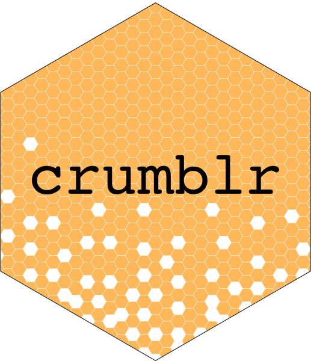
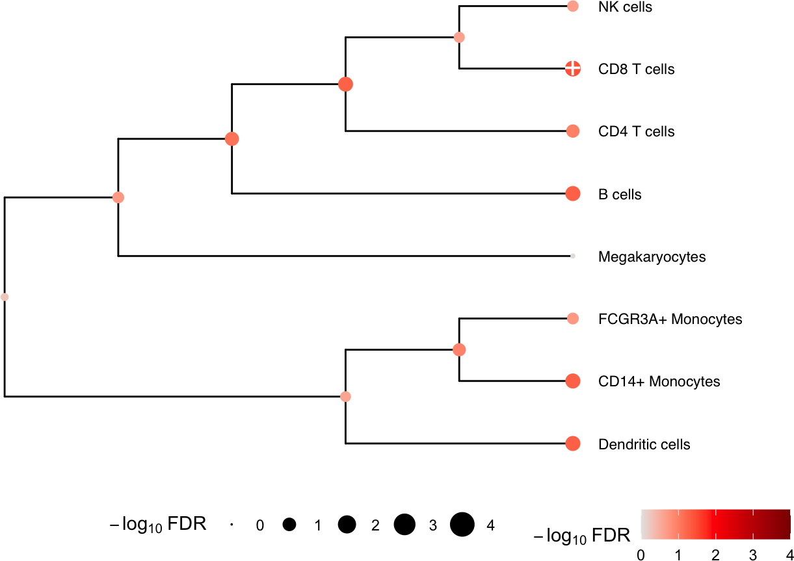

Integration with dreamlet / SingleCellExperiment
Developed by Gabriel Hoffman
Run on 2026-05-22 15:34:53.474467
Source:vignettes/integration.Rmd
integration.RmdLoad and process single cell data
Here we perform analysis of PBMCs from 8 individuals stimulated with
interferon-β Kang, et
al, 2018, Nature Biotech. We perform standard processing with dreamlet
to compute pseudobulk before applying crumblr.
Here, single cell RNA-seq data is downloaded from ExperimentHub.
library(dreamlet)
library(muscat)
library(ExperimentHub)
library(scater)
# Download data, specifying EH2259 for the Kang, et al. study
eh <- ExperimentHub()
sce <- eh[["EH2259"]]
sce$ind <- as.character(sce$ind)
# only keep singlet cells with sufficient reads
sce <- sce[rowSums(counts(sce) > 0) > 0, ]
sce <- sce[, colData(sce)$multiplets == "singlet"]
# compute QC metrics
qc <- perCellQCMetrics(sce)
# remove cells with few or many detected genes
ol <- isOutlier(metric = qc$detected, nmads = 2, log = TRUE)
sce <- sce[, !ol]
# set variable indicating stimulated (stim) or control (ctrl)
sce$StimStatus <- sce$stimAggregate to pseudobulk
Dreamlet creates the pseudobulk dataset:
# Since 'ind' is the individual and 'StimStatus' is the stimulus status,
# create unique identifier for each sample
sce$id <- paste0(sce$StimStatus, sce$ind)
# Create pseudobulk data by specifying cluster_id and sample_id for aggregating cells
pb <- aggregateToPseudoBulk(sce,
assay = "counts",
cluster_id = "cell",
sample_id = "id",
verbose = FALSE
)Process data
Here we evaluate whether the observed cell proportions change in response to interferon-β.
library(crumblr)
# use dreamlet::cellCounts() to extract data
cellCounts(pb)[1:3, 1:3]## B cells CD14+ Monocytes CD4 T cells
## ctrl101 101 136 288
## ctrl1015 424 644 819
## ctrl1016 119 315 413
# Apply crumblr transformation
# cobj is an EList object compatable with limma workflow
# cobj$E stores transformed values
# cobj$weights stores precision weights
cobj <- crumblr(cellCounts(pb))Analysis
Now continue on with the downstream analysis
library(variancePartition)
fit <- dream(cobj, ~ StimStatus + ind, colData(pb))
fit <- eBayes(fit)
topTable(fit, coef = "StimStatusstim", number = Inf)## logFC AveExpr t P.Value adj.P.Val B
## CD8 T cells -0.25085170 0.0857175 -4.0787416 0.002436375 0.01949100 -1.279815
## Dendritic cells 0.37386979 -2.1849234 3.1619195 0.010692544 0.02738587 -2.638507
## CD14+ Monocytes -0.10525402 1.2698117 -3.1226341 0.011413912 0.02738587 -2.709377
## B cells -0.10478652 0.5516882 -3.0134349 0.013692935 0.02738587 -2.940542
## CD4 T cells -0.07840101 2.0201947 -2.2318104 0.050869691 0.08139151 -4.128069
## FCGR3A+ Monocytes 0.07425165 -0.2567492 1.6647681 0.128337022 0.17111603 -4.935304
## NK cells 0.10270672 0.3797777 1.5181860 0.161321761 0.18436773 -5.247806
## Megakaryocytes 0.01377768 -1.8655172 0.1555131 0.879651456 0.87965146 -6.198336Given the results here, we see that CD8 T cells at others change relative abundance following treatment with interferon-β.
Multivariate testing along a tree
ere we construct a hierarchical clustering between cell types based
on gene expression from pseudobulk, and perform a multivariate test for
each internal node of the tree based on its leaf nodes. The results for
the leaves are the same as from topTable() above.
# hierarchical cluster based on pseudobulked gene expression
hcl <- buildClusterTreeFromPB(pb)
# Perform multivariate test across the hierarchy
res <- treeTest(fit, cobj, hcl, coef = "StimStatusstim")
# Plot hierarchy and testing results
plotTreeTest(res)
Session Info
## R version 4.5.1 (2025-06-13)
## Platform: aarch64-apple-darwin23.6.0
## Running under: macOS Sonoma 14.7.1
##
## Matrix products: default
## BLAS/LAPACK: /opt/homebrew/Cellar/openblas/0.3.33/lib/libopenblasp-r0.3.33.dylib; LAPACK version 3.12.0
##
## locale:
## [1] en_US.UTF-8/en_US.UTF-8/en_US.UTF-8/C/en_US.UTF-8/en_US.UTF-8
##
## time zone: America/New_York
## tzcode source: internal
##
## attached base packages:
## [1] stats4 stats graphics grDevices utils datasets methods base
##
## other attached packages:
## [1] crumblr_0.99.22 muscData_1.24.0 scater_1.38.1
## [4] scuttle_1.20.0 ExperimentHub_3.0.0 AnnotationHub_4.0.0
## [7] BiocFileCache_3.0.0 dbplyr_2.5.2 muscat_1.24.0
## [10] dreamlet_1.9.1 SingleCellExperiment_1.32.0 SummarizedExperiment_1.40.0
## [13] Biobase_2.70.0 GenomicRanges_1.62.1 GenomeInfoDb_1.46.2
## [16] Seqinfo_1.0.0 IRanges_2.44.0 S4Vectors_0.48.1
## [19] BiocGenerics_0.56.0 generics_0.1.4 MatrixGenerics_1.22.0
## [22] matrixStats_1.5.0 variancePartition_1.43.1 BiocParallel_1.44.0
## [25] limma_3.66.0 ggplot2_4.0.3 BiocStyle_2.38.0
##
## loaded via a namespace (and not attached):
## [1] fs_2.1.0 bitops_1.0-9 httr_1.4.8
## [4] RColorBrewer_1.1-3 doParallel_1.0.17 Rgraphviz_2.54.0
## [7] numDeriv_2016.8-1.1 sctransform_0.4.3 tools_4.5.1
## [10] backports_1.5.1 R6_2.6.1 metafor_5.0-1
## [13] lazyeval_0.2.3 mgcv_1.9-4 GetoptLong_1.1.1
## [16] withr_3.0.2 gridExtra_2.3 prettyunits_1.2.0
## [19] fdrtool_1.2.18 cli_3.6.6 textshaping_1.0.5
## [22] sandwich_3.1-1 labeling_0.4.3 slam_0.1-55
## [25] sass_0.4.10 KEGGgraph_1.70.0 SQUAREM_2026.1
## [28] mvtnorm_1.3-7 S7_0.2.2 blme_1.0-7
## [31] pkgdown_2.2.0 mixsqp_0.3-54 yulab.utils_0.2.4
## [34] systemfonts_1.3.2 zenith_1.12.0 dichromat_2.0-0.1
## [37] parallelly_1.47.0 invgamma_1.2 RSQLite_3.52.0
## [40] gridGraphics_0.5-1 shape_1.4.6.1 gtools_3.9.5
## [43] dplyr_1.2.1 Matrix_1.7-5 metadat_1.6-0
## [46] ggbeeswarm_0.7.3 abind_1.4-8 lifecycle_1.0.5
## [49] multcomp_1.4-30 yaml_2.3.12 edgeR_4.8.2
## [52] mathjaxr_2.0-0 gplots_3.3.0 SparseArray_1.10.10
## [55] grid_4.5.1 blob_1.3.0 crayon_1.5.3
## [58] lattice_0.22-9 beachmat_2.26.0 msigdbr_26.1.0
## [61] annotate_1.88.0 KEGGREST_1.50.0 pillar_1.11.1
## [64] knitr_1.51 ComplexHeatmap_2.26.1 rjson_0.2.23
## [67] boot_1.3-32 estimability_1.5.1 corpcor_1.6.10
## [70] future.apply_1.20.2 codetools_0.2-20 glue_1.8.1
## [73] ggiraph_0.9.6 fontLiberation_0.1.0 ggfun_0.2.0
## [76] data.table_1.18.4 treeio_1.34.0 vctrs_0.7.3
## [79] png_0.1-9 Rdpack_2.6.6 gtable_0.3.6
## [82] assertthat_0.2.1 cachem_1.1.0 zigg_0.0.2
## [85] xfun_0.57 rbibutils_2.4.1 S4Arrays_1.10.1
## [88] Rfast_2.1.5.2 coda_0.19-4.1 reformulas_0.4.4
## [91] survival_3.8-6 iterators_1.0.14 statmod_1.5.2
## [94] TH.data_1.1-5 nlme_3.1-169 pbkrtest_0.5.5
## [97] ggtree_4.0.5 fontquiver_0.2.1 bit64_4.8.2
## [100] filelock_1.0.3 progress_1.2.3 EnvStats_3.1.0
## [103] bslib_0.11.0 TMB_1.9.21 irlba_2.3.7
## [106] vipor_0.4.7 KernSmooth_2.23-26 otel_0.2.0
## [109] colorspace_2.1-2 rmeta_3.0 DBI_1.3.0
## [112] DESeq2_1.50.2 tidyselect_1.2.1 emmeans_2.0.3
## [115] bit_4.6.0 compiler_4.5.1 curl_7.1.0
## [118] httr2_1.2.2 graph_1.88.1 BiocNeighbors_2.4.0
## [121] fontBitstreamVera_0.1.1 desc_1.4.3 DelayedArray_0.36.1
## [124] bookdown_0.46 scales_1.4.0 caTools_1.18.3
## [127] remaCor_0.0.20 rappdirs_0.3.4 stringr_1.6.0
## [130] digest_0.6.39 minqa_1.2.8 rmarkdown_2.31
## [133] aod_1.3.3 XVector_0.50.0 RhpcBLASctl_0.23-42
## [136] htmltools_0.5.9 pkgconfig_2.0.3 lme4_2.0-1
## [139] sparseMatrixStats_1.22.0 lpsymphony_1.38.0 mashr_0.2.79
## [142] fastmap_1.2.0 rlang_1.2.0 GlobalOptions_0.1.4
## [145] htmlwidgets_1.6.4 UCSC.utils_1.6.1 DelayedMatrixStats_1.32.0
## [148] farver_2.1.2 jquerylib_0.1.4 IHW_1.38.0
## [151] zoo_1.8-15 jsonlite_2.0.0 BiocSingular_1.26.1
## [154] RCurl_1.98-1.18 magrittr_2.0.5 ggplotify_0.1.3
## [157] patchwork_1.3.2 Rcpp_1.1.1-1.1 gdtools_0.5.0
## [160] ape_5.8-1 viridis_0.6.5 babelgene_22.9
## [163] EnrichmentBrowser_2.40.0 stringi_1.8.7 MASS_7.3-65
## [166] plyr_1.8.9 listenv_0.10.1 parallel_4.5.1
## [169] ggrepel_0.9.8 Biostrings_2.78.0 splines_4.5.1
## [172] hms_1.1.4 circlize_0.4.18 locfit_1.5-9.12
## [175] ScaledMatrix_1.18.0 reshape2_1.4.5 BiocVersion_3.22.0
## [178] XML_3.99-0.23 evaluate_1.0.5 RcppParallel_5.1.11-2
## [181] BiocManager_1.30.27 nloptr_2.2.1 foreach_1.5.2
## [184] tidyr_1.3.2 purrr_1.2.2 future_1.70.0
## [187] clue_0.3-68 scattermore_1.2 ashr_2.2-63
## [190] rsvd_1.0.5 broom_1.0.13 xtable_1.8-8
## [193] tidytree_0.4.7 fANCOVA_0.6-1 viridisLite_0.4.3
## [196] ragg_1.5.2 truncnorm_1.0-9 tibble_3.3.1
## [199] aplot_0.2.9 lmerTest_3.2-1 glmmTMB_1.1.14
## [202] memoise_2.0.1 beeswarm_0.4.0 AnnotationDbi_1.72.0
## [205] cluster_2.1.8.2 globals_0.19.1 GSEABase_1.72.0